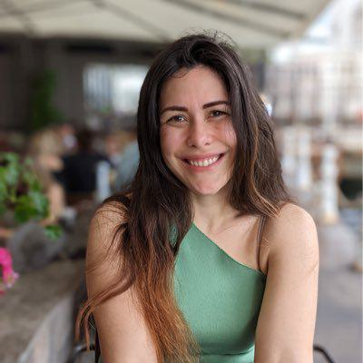
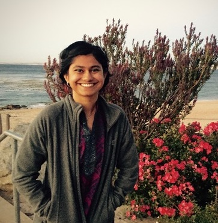

Organizers
|  | |||
| Bo Li UIUC |
Nezihe Merve Gürel TU Delft |
Theo Rekatsinas Apple |
|
 |
 | ||
| Beliz Günel Google Research |
Alberto L. Sangiovanni-Vincentelli UC Berkeley |
Paroma Varma Snorkel AI |
Student organizers
| Chulin Xie UIUC |
Mintong Kang UIUC |